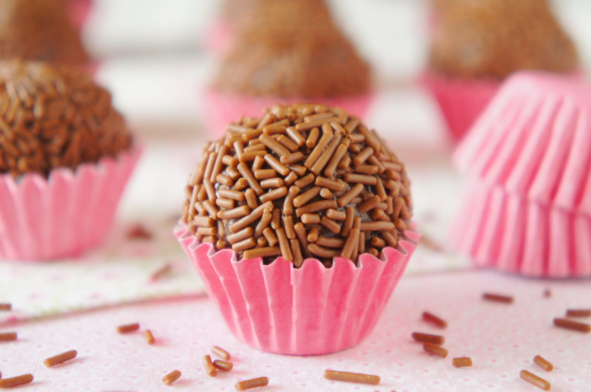

Brasilien – Brigadeiro (brasilianische Schokokugeln)
Brigadeiro Brasileiro
Diese weichen und knusprigen Schokoladenpralinen sind genauso lecker wie einfach zu zubereiten. Eine beliebte Süßigkeit in Brasilien, die oft als Dessert und auf Geburtstagsfeiern serviert wird.
Brigadeiro – Brasilianische Pralinen
Süßigkeiten machen war noch nie so einfach. Diese weichen Schokoladen- und Karamellpralinen sind ein Hit für die ganze Familie.
- Kurs: Dessert
- Küche: Brasilianisch
Zutaten:
1 Dose (ca. 400 g) gesüßte Kondensmilch
2 Esslöffel ungesüßtes Kakaopulver (optional bis zu 4 EL)
2 Esslöffel ungesalzene Butter
Schokoladenstreusel oder Kakaonibs
Zubereitung:
Eine Tarteform (ca. 20 cm) mit Butter einfetten und beiseite stellen.
Für jede verwendete Esslöffel Kakaopulver 1 Esslöffel Wasser in einer kleinen Schüssel hinzufügen und zu einer Paste verrühren.
In einem beschichteten Topf mit dickem Boden die Butter schmelzen. Dann die Kondensmilch und die Kakaopaste hinzugeben und gut umrühren.
Unter ständigem Rühren bei mittlerer Hitze ca. 10–15 Minuten kochen, bis die Masse dick wird und sich vom Topfboden löst.
Ein kleiner Test: Wenn die Masse an einem Holzlöffel klebt und kurz daran hängen bleibt, ist sie fertig.
Die Masse in die vorbereitete Form geben und etwa 30 Minuten im Kühlschrank fest werden lassen.
Die Streusel in kleine Schüsseln geben. Hände leicht mit Butter einfetten, aus der Masse kleine Kugeln (ca. 3,5–4 cm) formen und in den Streuseln wälzen.
In kleine Papierförmchen geben. Gut verschlossen bei Raumtemperatur bis zu 2 Tage oder im Kühlschrank bis zu 1 Woche haltbar. Gefroren bis zu 30 Tage.
Ergibt ca. 15–20 Brigadeiros.
Zurück zur Startseite